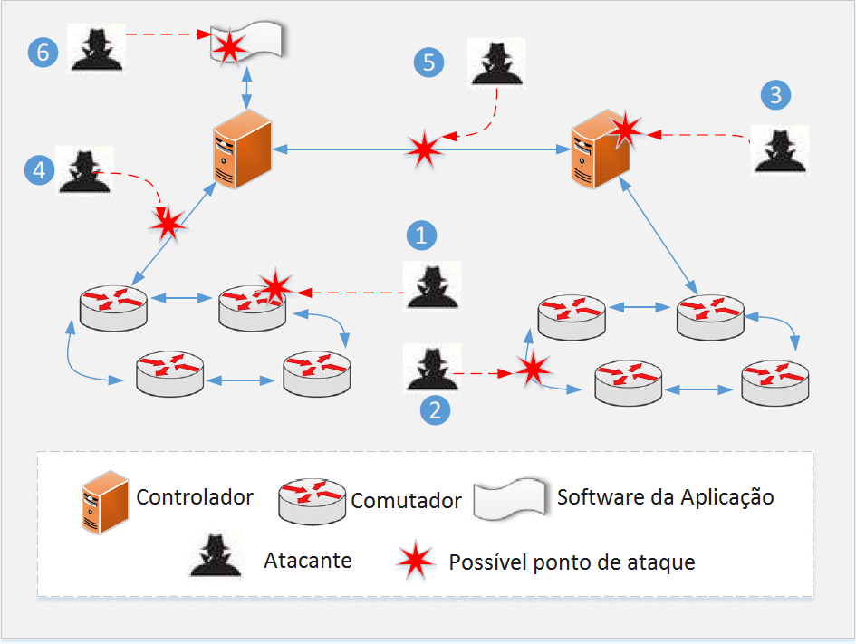

Atualmente, as redes de computadores, em especial a Internet, servem de base para um incontável número de aplicações e a cada dia são utilizadas por um número maior de pessoas. De acordo com a União Internacional de Telecomunicações (ITU - International Telecommunication Union), no final do ano de 2015 a Internet tinha cerca de 3,2 bilhões de usuários. Diariamente, inúmeras compras e transações bancárias são realizadas pela Internet, ações estas que exigem uma rede segura, uma vez que falhas de segurança nestes casos podem causar enorme prejuízo aos usuários. Desta maneira, a segurança é essencial em redes de computadores para que pessoas e organizações possam utilizá-las sem que seus dados corram riscos.
À medida que a Internet foi se expandindo, novas soluções de segurança foram criadas, como o IPSec, uma extensão que visa promover segurança na camada de rede. No entanto, da mesma forma, novas ameaças foram surgindo e atualmente a Internet possui diversos problemas de segurança. Redes tradicionais como a Internet de hoje são baseadas em software fechado sobre hardware proprietário e esta característica é um dos empecilhos na criação de redes mais seguras, pois leva um tempo considerável para que o software da rede receba atualizações de segurança.
Ao separar os planos de dados e de controle, as redes definidas por software eliminam esta limitação, pois o controle, que é feito por software, não depende mais de hardware proprietário e pode receber imediatamente novas soluções de segurança através da interface programável aberta de que as redes SDN dispõem.
Desafios de segurança em redes SDN
A segurança em redes definidas por software tem muitos desafios em comum com a segurança em redes tradicionais, porém, ela possui alguns desafios específicos relacionados com as características arquiteturais das redes SDN. As redes definidas por software, no que diz respeito à segurança, apresentam vantagens e desvantagens com relação às redes tradicionais. Entre as vantagens, podemos citar:
- Monitoramento eficiente de tráfego anômalo: O controlador SDN é capaz de monitorar toda a rede ao mesmo tempo e, por isso, a detecção de anomalias é mais eficiente do que em redes tradicionais;
- Tratamento rápido de novas ameaças: como já foi dito acima, sempre que uma nova ameaça a essas redes for detectada, esta pode ser tratada imediatamente via programação nas redes SDN. Já nas redes tradicionais, quando surge uma nova ameaça, é necessário esperar por uma atualização de um software fechado que é executado em um hardware proprietário.
As desvantagens incluem:
- Controlador vulnerável: devido à característica das redes SDN de ter o controle logicamente centralizado, muitas de suas funções estão concentradas no controlador. Assim, o controlador é um ponto único de falha e, ao atacá-lo e comprometê-lo, um atacante pode afetar toda a rede;
- Interface programável aberta: Como a arquitetura das redes SDN é aberta, é extremamente fácil para um atacante descobrir as vulnerabilidades de software da rede. Além disso, essa interface programável torna muito mais fácil a tarefa de incorporar código malicioso na rede;
-
Mais pontos de ataque: Como a arquitetura SDN é dividida em 3 camadas, com a separação do plano de dados do plano de controle, ela possui mais pontos de ataques do que as redes tradicionais. Esses pontos são enumerados e mostrados na figura abaixo:
- O comutador;
- O enlace entre comutadores;
- O controlador;
- Os enlaces entre o controlador e os comutadores;
- O enlace entre controladores;
- O software da camada de aplicação.

Pontos de ataque. Adaptada do artigo Security in Software-Defined Networking: Threats and Countermeasures em https://www.researchgate.net/publication/290477553_Security_in_Software-Defined_Networking_Threats_and_Countermeasures
Ameaças à segurança de redes SDN
Ataques de DoS e DDoS no controlador
O objetivo destes dois tipos de ataque é o mesmo: inundar a rede com uma quantidade enorme de pacotes em um curto espaço de tempo de modo a sobrecarregar o controlador e tornar seus recursos indisponíveis aos usuários legítimos. A diferença entre eles é que no ataque de DoS (Negação de Serviço, do inglês Denial of Service) apenas uma máquina é utilizada para enviar os pacotes e no ataque de DDoS (Ataque Distribuído de Negação de Serviço, do inglês Distributed Denial of Service) os pacotes são enviados por várias máquinas zumbis que são controladas pelo atacante.
Com o OpenFlow habilitado, quando um pacote chega a um comutador e este não sabe como lidar com ele, ou o pacote completo é encaminhado ao controlador ou ele fica armazenado no buffer de fluxos e apenas o seu cabeçalho é enviado ao controlador. Assim, um ataque de negação de serviço sobrecarregará o controlador ao fazer com que ele lide com uma quantidade enorme de pacotes com os quais o comutador não sabe como lidar, além de deixar o enlace entre os comutadores e o controlador totalmente ocupado. A imagem abaixo ilustra um ataque de negação de serviço:
Ataque de negação de serviço. Adaptada do artigo Security in Software-Defined Networking: Threats and Countermeasures em https://www.researchgate.net/publication/290477553_Security_in_Software-Defined_Networking_Threats_and_Countermeasures